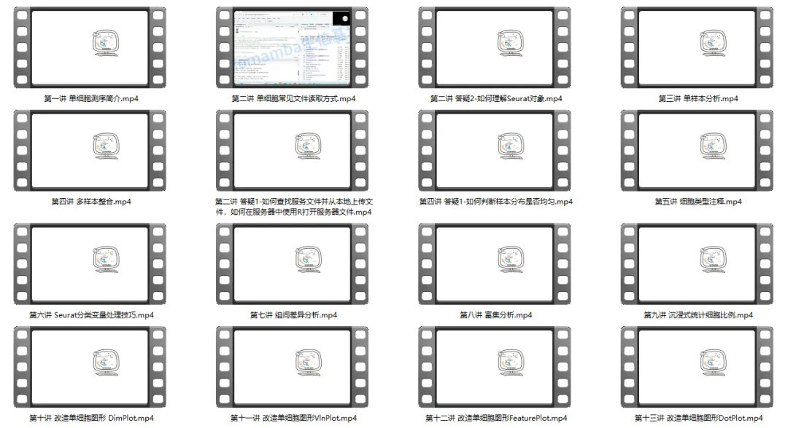
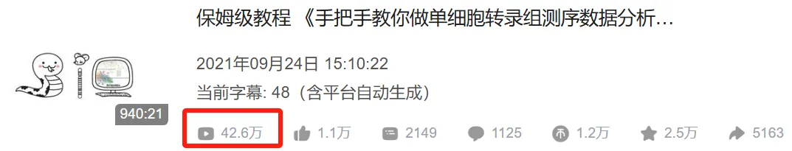
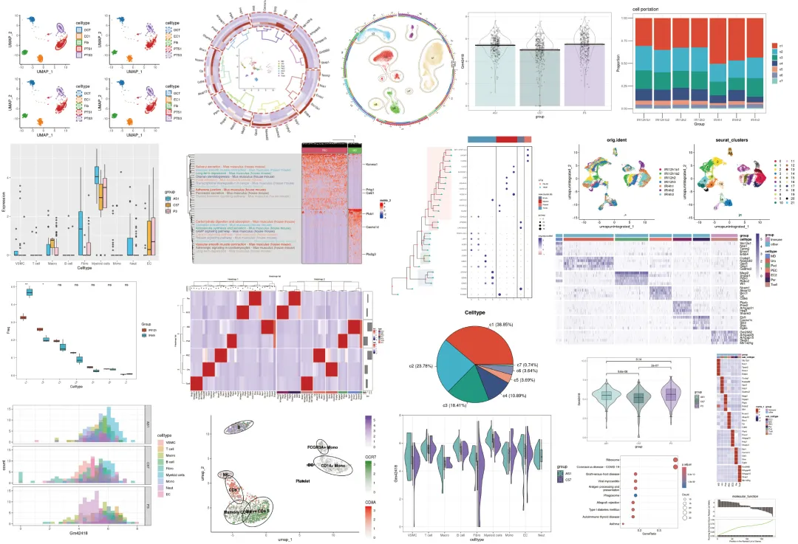
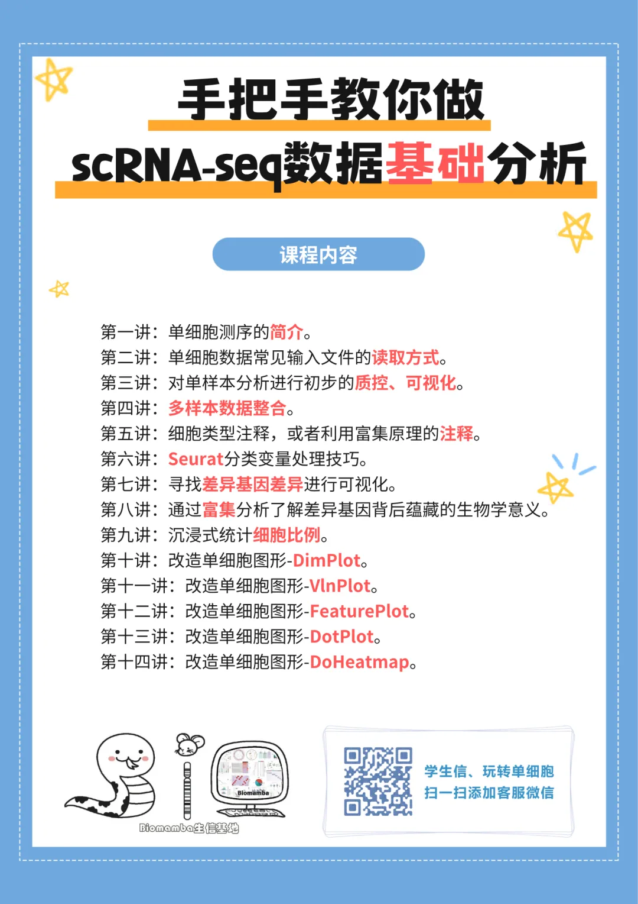
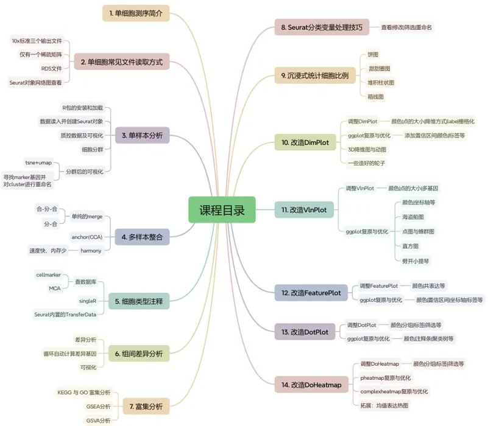
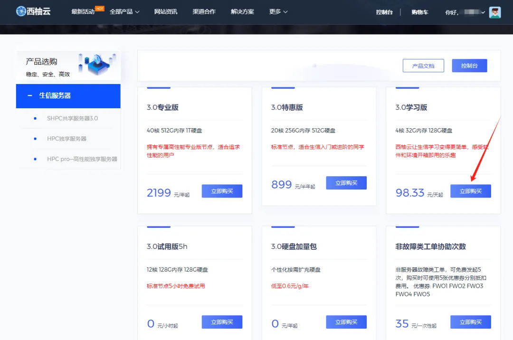
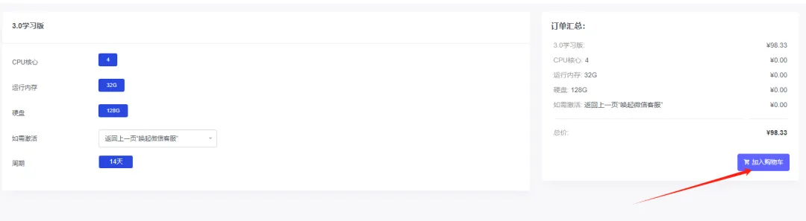
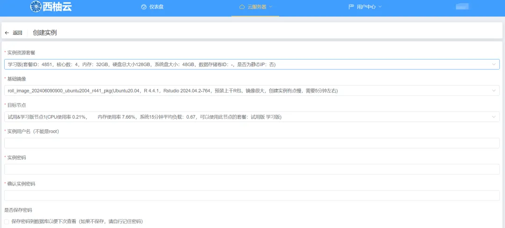
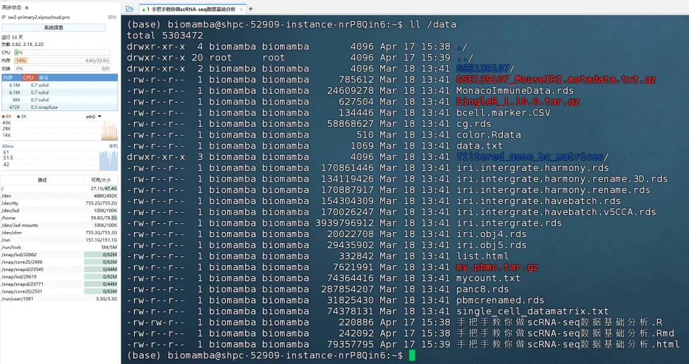

25年最新视频|《手把手教你做scRNA-seq数据基础分析》
原文：https://mp.weixin.qq.com/s?__biz=MzAwMzIzOTk5OQ==&mid=2247528512&idx=1&sn=d316bffcbe59e676cd22248936f07b69&chksm=9b3c0910ac4b80062047b0973483143ce40095e5d2bf824523aafcb9703e0edbec8a81f64397#rd 合集：单细胞教程全收录 / 生信基地

欢迎随时加入课程


《手把手教你做scRNA-seq数据基础分析》教学视频已录制完成，纯享版时长9h15min。课程结束答疑不停，我们组建了专门的答疑交流群，大家可以在群里随时针对课程内容进行提问，频次高的答疑我们也会另外录制视频做增补。大家可以联系我们进行报名并领取回放+资料+开箱即用的单细胞分析镜像。

** **
可联系[ Biomamba_zhushou]进行课程报名
已有生信基地联系方式的同学无需重复添加


手把手教你做scRNA-seq数据基础分析
离我们最开始做单细胞教程已经过去四五年，现在已经收获了40w+的阅读量。一共940min的教程相信足够大家完成单细胞的学习与文章发表，我们也陆陆续续收到小伙伴们的发文致谢：致谢合辑。

一方面随着时间飞逝，原先教学中的一些内容已然过时，毕竟我们最初的演示是基于Seurat V3，而现在V5上线都已经快两年了。另一方面很多同学由于缺少编程、单细胞、文章套路等基本知识，跟着视频并不能完全自学掌握单细胞分析技能。因此，基于最新的R环境与Seurat版本，我们重新组织、修订了《手把手教你做单细胞测序数据分析》课程。04月12日~13日在生信基地（线上/线下均可参与，错过直播也可以加入录播/答疑+循环开课）也希望真的能够做到“手把手”的带大家完成单细胞测序数据分析的学习，当然，我们拒绝生信快餐，课后欢迎大家随时在群里对课程内容提问~报名即送5.5h入门R语言回放与答疑服务。自学能力强的小伙伴也可以直接跟B站教程与我们的最新版学习手册scRNA-seq数据基础分析手册(2025最新修订)： https://www.bilibili.com/video/BV1S44y1b76Z/ 参与此次课程你将获得：1、单细胞数据分析教学指导与答疑2、开箱即用(我们已经布置好了环境)的单细胞分析环境：学习版上架啦~3、5.5h入门R语言回放、答疑群、讲义4、scRNA-seq基础分析手册、代码、测试文件 教程图片集锦：
课表


学习资料
同我们以前的课程一样，我们给大家准备了学习手册和学习资料，大家报名后可入群领取：


测试文件，总大小5.1GB：
├── GSE139107
│ ├── GSE139107_MouseIRI_12hours.dge.txt.gz
│ ├── GSE139107_MouseIRI_14days.dge.txt.gz
│ ├── GSE139107_MouseIRI_2days.dge.txt.gz
│ ├── GSE139107_MouseIRI_4hours.dge.txt.gz
│ ├── GSE139107_MouseIRI_6weeks.dge.txt.gz
│ └── GSE139107_MouseIRI_control.dge.txt.gz
├── GSE139107_MouseIRI.metadata.txt.gz
├── MonacoImmuneData.rds
├── bcell.marker.CSV
├── cg.rds
├── color.Rdata
├── data.txt
├── filtered_gene_bc_matrices
│ └── hg19
│ ├── barcodes.tsv
│ ├── genes.tsv
│ └── matrix.mtx
├── iri.intergrate.harmony.rds
├── iri.intergrate.harmony.rename.rds
├── iri.intergrate.havebatch.rds
├── iri.intergrate.havebatch.v5CCA.rds
├── iri.intergrate.rds
├── iri.obj4.rds
├── iri.obj5.rds
├── my.pbmc.tar.gz
├── mycount.txt
├── panc8.rds
├── pbmcrenamed.rds
└── single_cell_datamatrix.txt
3 directories, 27 files
开箱即用的单细胞分析环境
为了配合我们的《手把手教你做scRNA-seq数据基础分析》课程，我们把教学中用到的环境封装打包，整理成专属的镜像，大家可以一键布置后跟着课程内容进行学习(杜绝版本差异、踏平学习门槛)。学习版服务器为免费的32GB内存、4线程、100GB硬盘(使用时长两周)。"学习版"权限完整申请视频流程如下：镜像说明：
学习版权限申请图文流程：第一步，复制网址(https://biomamba.xiyoucloud.net/)至浏览器，注册账号实名认证(根据法规要求，所有虚拟产品须实名认证才可以交易)。第二步，点击进入生信服务器列表，选择3.0学习版的"点击购买"，加入购物车：


第三步，输入并应用优惠码(联系客服Biomamba_zhushou领取)，查看价格是否变成0元 第四步，联系微信[Biomamba_yunying]，发送账号/用户ID，我们为您激活服务器
第五步，进入控制台创建实例选择西南二区
第四步，联系微信[Biomamba_yunying]，发送账号/用户ID，我们为您激活服务器
第五步，进入控制台创建实例选择西南二区 第六步，镜像选择：现额外添加了"手把手教你做scRNA-sseq基础分析"镜像，大家选择这个镜像就可以参加本次的课程啦~
第六步，镜像选择：现额外添加了"手把手教你做scRNA-sseq基础分析"镜像，大家选择这个镜像就可以参加本次的课程啦~ 第七步，创建服务器实例，设置账户和密码，获取IP和端口
第七步，创建服务器实例，设置账户和密码，获取IP和端口
第八步，连接服务器下载finalshell并安装，下载页面可获取合适的版本：https://www.hostbuf.com/t/988.html

第一次创建连接的时候可能有点麻烦，需要按以下1、2、3号箭头依次点击。在弹出的窗口中依次填入购买成功页面显示的以下信息后点击确定。 关闭finalshell并重启后即可通过双击快速连接访问服务器，以上的信息填写一次就好啦，以后直接点击这个快速连接即可：
关闭finalshell并重启后即可通过双击快速连接访问服务器，以上的信息填写一次就好啦，以后直接点击这个快速连接即可：
 快速连接就能进入ssh远程登陆啦：
快速连接就能进入ssh远程登陆啦： 测试数据与代码也都提大家打包好了，无需手动上传：
测试数据与代码也都提大家打包好了，无需手动上传：

Rstudio-server也是可以正常连接的，开箱即用无需自行配置，大家可以愉快的学习R语言和单细胞：
报名费用
2天满满的课程（算上R语言就是四天课程啦）只要799￥，性价比超高的单细胞教程，相信比小学生补课班还便宜。生信基地的任何业务均支持对公。
本期现场

往期活动

如何联系我们

 留一个领取资料、免费两周学习版服务器的微信号[Biomamba_zhusou]，方便各位随时交流。同时我们也构建了交流群矩阵，欢迎大家入群讨论。
留一个领取资料、免费两周学习版服务器的微信号[Biomamba_zhusou]，方便各位随时交流。同时我们也构建了交流群矩阵，欢迎大家入群讨论。
大家可以阅读完这几篇之后添加给生信入门初学者的小贴士 如何搜索公众号过往发布内容
已有生信基地联系方式的同学无需重复添加
 您点的每个赞和在看，我都认真当成了喜欢
您点的每个赞和在看，我都认真当成了喜欢